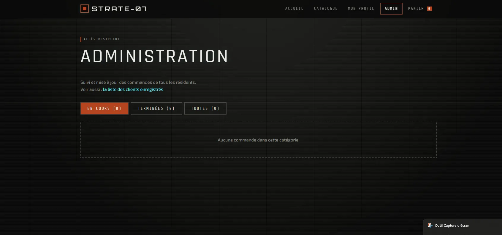
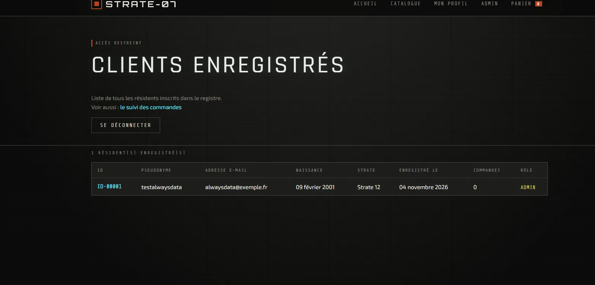
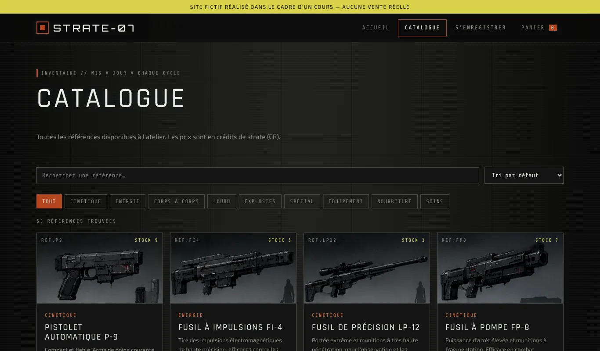
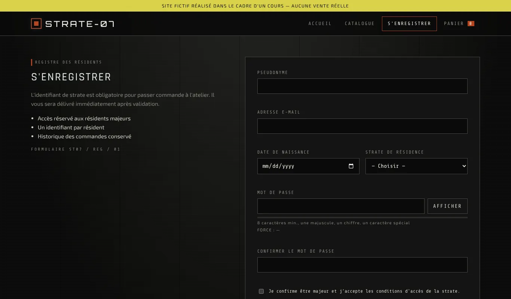

STRATE-07

Page d'accueil. Le bandeau jaune rappelle qu'il s'agit d'un site fictif.
Description
STRATE-07 est une boutique fictive complète : un visiteur peut créer un compte, se connecter, parcourir un catalogue de 53 produits, passer commande et suivre ses commandes. Un espace administrateur permet de voir les clients inscrits et de faire avancer les commandes (en préparation, expédiée, livrée).
Les pages sont en HTML/CSS/JavaScript. Le JavaScript interroge des scripts PHP qui lisent et écrivent dans une base MySQL, puis renvoient les données en JSON.
Fonctionnalités
- Catalogue : 53 produits, filtres par catégorie, recherche, tri, fiche détaillée.
- Comptes clients : inscription avec vérification des champs, connexion par pseudo ou e-mail, session de 30 jours.
- Panier et commandes : le serveur revérifie le prix et le stock avant d'enregistrer la commande, puis met le stock à jour.
- Profil : informations du client et suivi de ses commandes.
- Espace administrateur : liste des clients, changement de statut des commandes. Un compte client normal est refusé.
Sécurité
- Mots de passe hachés avec
password_hash(), jamais stockés en clair. - Requêtes préparées partout, contre l'injection SQL.
- Toutes les vérifications refaites côté serveur : le JavaScript peut être contourné.
- Pages admin protégées côté serveur, pas seulement masquées dans l'interface.
- Utilisateur MySQL dédié au site, distinct du compte principal de l'hébergement.
- Cookie de session
HttpOnly,SameSite=Lax, etSecureen HTTPS.
Mise en ligne
Le site a d'abord été développé en local avec WampServer, puis déployé chez l'hébergeur alwaysdata :
- Création de la base et d'un utilisateur MySQL dédié depuis le panneau de l'hébergeur.
- Adaptation des scripts SQL : un hébergeur mutualisé n'autorise pas
CREATE DATABASE, les tables sont importées dans la base créée depuis le panneau. - Fichiers inutiles en production retirés du serveur : scripts SQL, page de test de connexion, sauvegardes.
- Transfert des fichiers en FTP chiffré (TLS) avec FileZilla.
- Tests en conditions réelles : inscription, connexion, commande, baisse du stock, changement de statut par l'admin.
Un problème rencontré
Après la mise en ligne, le catalogue s'affichait correctement… mais ce n'était pas une preuve que la base fonctionnait : le JavaScript contient une copie de secours du catalogue, utilisée si le serveur ne répond pas. J'ai donc testé directement le script php/produits.php, puis une inscription réelle, pour vérifier que les données venaient bien de MySQL.
Ma part dans le projet
Idée et univers, choix des fonctionnalités, mise en place de la base de données en local puis chez l'hébergeur, déploiement (FTP, configuration MySQL) et tests.
Le code est écrit avec l'assistance d'une IA. Je le relis et je l'applique en cherchant à le comprendre, pour pouvoir le faire évoluer moi-même.
Espace administrateur
L'espace admin n'est pas accessible publiquement, car il affiche les adresses e-mail des inscrits. Voici à quoi il ressemble :


Autres captures

